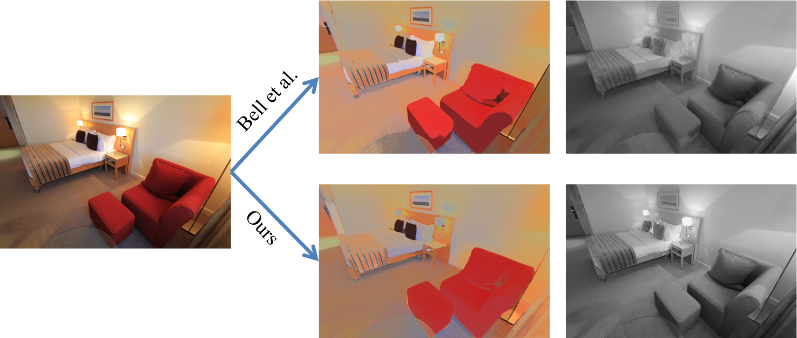

Learning Data-driven Reflectance Priors for Intrinsic Image Decomposition
{kind=link}
PeopleAbstractWe propose a data-driven approach for intrinsic image decomposition, which is the process of inferring the confounding factors of reflectance and shading in an image. We pose this as a two-stage learning problem. First, we train a model to predict relative reflectance ordering between image patches (`brighter', `darker', `same') from large-scale human annotations, producing a data-driven reflectance prior. Second, we show how to naturally integrate this learned prior into existing energy minimization frameworks for intrinsic image decomposition. We compare our method to the state-of-the-art approach of Bell et al. on both decomposition and image relighting tasks, demonstrating the benefits of the simple relative reflectance prior, especially for scenes under challenging lighting conditions. |
Paper
ICCV'15 paper. (pdf, 10.4MB)(There was an indexing typo in computing the MPRE metric in the version we submitted to the ICCV'15 proceedings. Please refer to the above link for corrected version.)